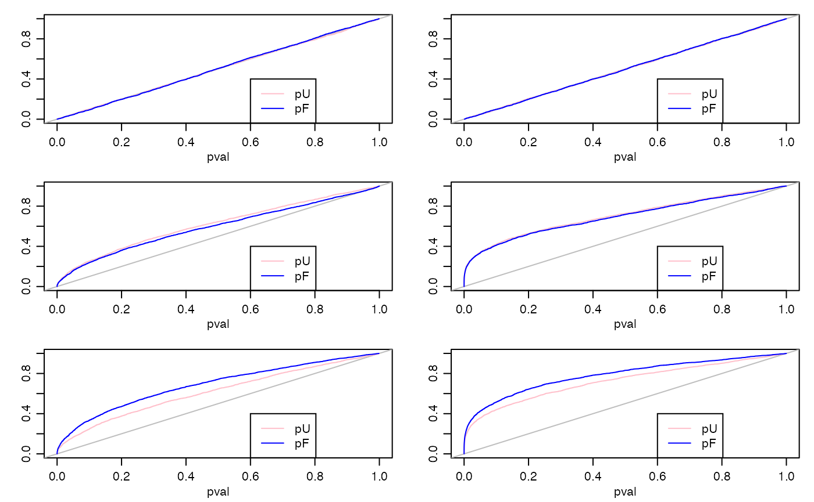

simstudy.Rmdlibrary(FABInference)This vignette presents a small simulation study comparing FAB \(p\)-values to UMPU \(p\)-values (for linear models) and to Wald \(p\)-values (for generalized linear models). There are \(2\times 3\) scenarios considered - two “models” (normal linear regression and Poisson regression), and three regimes for the true regression coefficients:
all coefficients are zero;
coefficients are distributed symmetrically around zero;
coefficients are somewhat linearly related to an observed explanatory variable.
What do we expect to happen, and why?
When all coefficients are zero, then the FAB and UMPU \(p\)-values fr the linear model are exactly uniformly distributed. For the glm, they will be approximately (asymptotically) uniformly distributed.
The worst-case scenario for the FAB \(p\)-values is the case where the true coefficients are centered around zero, and there is no external information distinguishing the positive from the negative coefficients. This is because there is no information for the adaptive FAB procedure to learn from. However, if the linking model includes a distribution centered around zero, then we expect the FAB procedure to adapt to this, resulting in \(p\)-values that closely resemble the UMPU and Wald \(p\)-values.
If there coefficients are not centered around zero or are related to an observed variable, then the adaptive FAB procedure can learn the center or the relationship, and then use more powerful test statistics to improve performance, on average across parameters.
Below is code to implement these scenarios. Note that for pedagogic reasons
an extra couple of observed “control” variables, w1 and w2 are included in the regression model, but are not part of the linking model. Below the code is a summary plot of the results, giving the CDFs of the different kinds of \(p\)-values. The results are as expected.
#### sim study
n<-100 ; p<-25 ; nsim<-100
par(mfcol=c(3,2),mar=c(3,3,1,1),mgp=c(1.75,.75,0))
for(model in c("Gaussian","Poisson")){
for(scenario in 1:3){
FP<-NULL ; UP<-NULL
for(s in 1:nsim){
set.seed(s)
## FAB coefficients and variables
v<-rnorm(p)
if(scenario==1){ beta<-rep(0,p) }
if(scenario==2){ beta<-rnorm(p) }
if(scenario==3){ beta<-(2 - 2*v + rnorm(p))/3 }
X<-matrix(rnorm(n*p),n,p)/8
## control coefficients and variables
alpha1<-.5 ; alpha2<- -.5
w1<-rnorm(n)/8
w2<-rnorm(n)/8
## simulate data and fit model
lp<-1 + alpha1*w1 + alpha2*w2 + X%*%beta
if(model=="Gaussian"){
y<-rnorm(n,lp)
fit0<-lm(y~w1+w2+X)
fit1<-lmFAB(y~w1+w2,X,~v,silent=TRUE)
}
if(model=="Poisson"){
y<-rpois(n,exp(lp))
fit0<-glm(y~w1+w2+X,family=poisson)
fit1<-glmFAB(y~w1+w2,X,~v,family=poisson,silent=TRUE)
}
## output
FP<-rbind(FP,fit1$FABpv)
UP<-rbind(UP,summary(fit0)$coef[fit1$FABvars,4] )
}
plot(c(0,1),c(0,1),type="n",xlab="pval",ylab="")
abline(0,1,col="gray")
lines(sort(UP),seq(0,1,length=s*p),col="pink")
lines(sort(FP),seq(0,1,length=s*p),col="blue")
legend(.6,.4,lty=c(1,1),col=c("pink","blue"),legend=c("pU","pF"))
}}